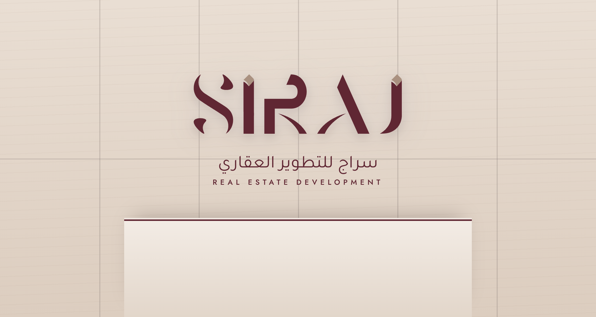

Printed fabric in a tensioned frame (SEG), Deep ground; the vector silk ribbon at full scale. Project name both scripts, one line of voice. Model plinth stands 1.5 m in front; spot-lit from above.

6 000 mm
RECEPTION BACKDROP · 6 000 × 3 200 MM
Honed travertine-look panels on a 1 200 mm module. SIRAJ wordmark in brushed maroon metal, 50 mm proud, halo-lit warm white (2700 K). Arabic descriptor routed beneath. Stone reception counter with a maroon reveal line.